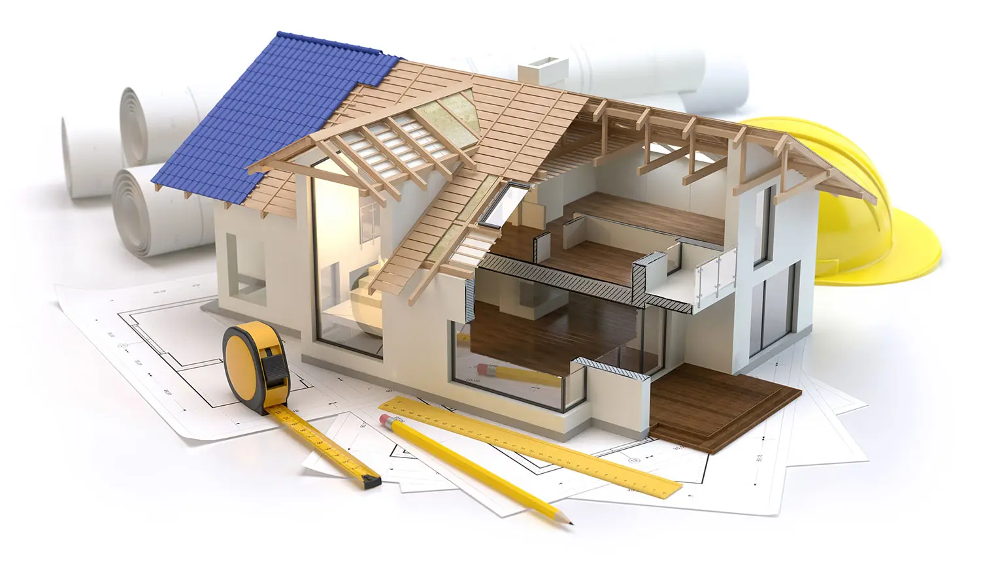

Le Prisme et son histoire.
Le Prisme est une société qui a été créée en 1993 par Alain VILO. Jusqu'en 2012, notre activité principale concernait la rénovation et la construction de gros Oeuvre en Martinique.
A la suite de cela, nous devenons Assistant à Maitrise d'Ouvrage après avoir obtenus les certifications délivrées par l'état.
Notre mission consiste donc à accompagner tous clients qui souhaitent effectuer des travaux dans son logement.
Si vous souhaitez nous rendre visite, nous sommes situés sur Ducos.